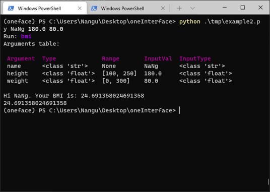
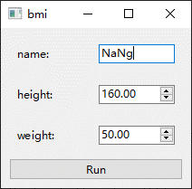
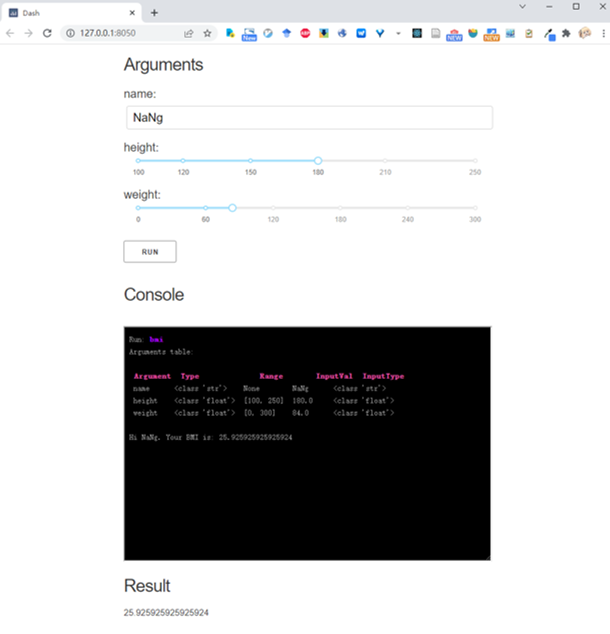

Home
oneFace is a Python library for automatically generating multiple interfaces(CLI, GUI, WebGUI) from a callable Python object.
Features
- Generate CLI, Qt GUI, Dash Web app from a python function or a command line.
- Automatically check the type and range of input parameters and pretty print them.
- Easy extension of parameter types and GUI widgets.
- Support for embedding the generated interface into a parent application.
Installation
To install oneFace with complete dependency:
Or install with just qt or dash dependency:
Qt bindings
oneFace support different Qt bindings: PyQt6(default), PyQt5, PySide2, PySide6. It can be specified:
Example
oneFace is an easy way to create interfaces in Python, just decorate your function and mark the type and range of the arguments:
from oneface import one, Val
@one
def bmi(name: str,
height: Val[float, [100, 250]] = 160,
weight: Val[float, [0, 300]] = 50.0):
BMI = weight / (height / 100) ** 2
print(f"Hi {name}. Your BMI is: {BMI}")
return BMI
# run cli
bmi.cli()
# or run qt_gui
bmi.qt_gui()
# or run dash web app
bmi.dash_app()
These code will generate the following interfaces:
| CLI | Qt | Dash |
|---|---|---|
|  |  |  |